01 — 결정
대회 홍보영상에 경기장을 넣지 않기로 했습니다
대회 홍보영상이라면 보통 경기장을 먼저 보여줍니다. 관중석, 매트, 전광판. 그런데 그렇게 찍으면 어느 대회인지는 알겠지만 무엇이 대단한지는 남지 않습니다.
촬영 전날 방향을 바꿨습니다. 배경을 전부 지우고, 검은 공간에 선수와 빛만 남기기로. 품새는 상대와 겨루는 종목이 아니라 동작 그 자체를 보여주는 종목이니, 화면에서도 동작만 남기는 게 맞다고 봤습니다.
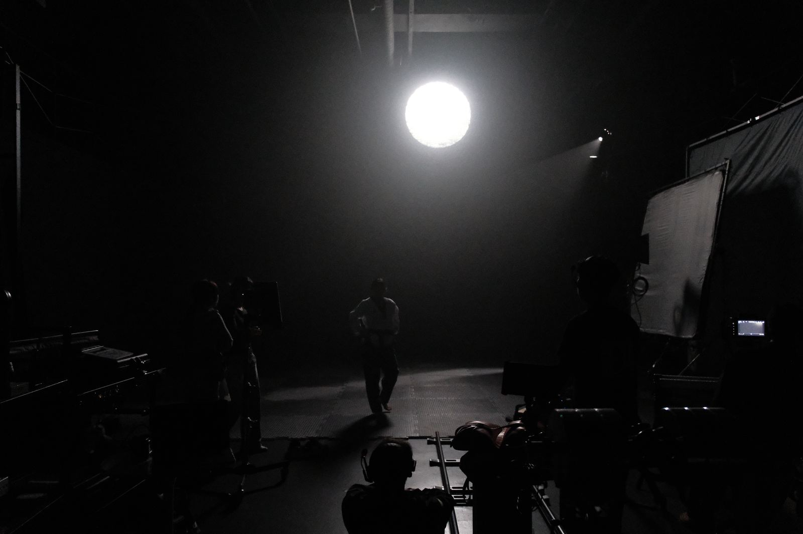
빛 하나만 남긴 세팅 — 배경은 검은색이 아니라 아무것도 없는 상태가 목표였습니다
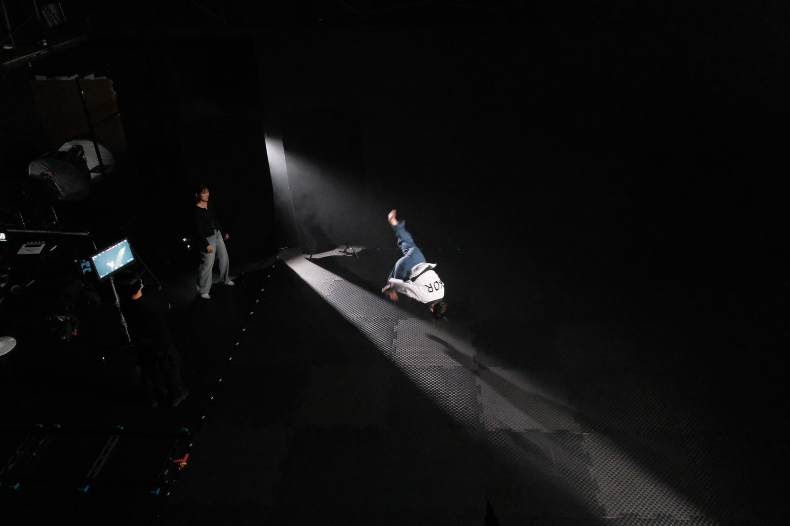
빛이 닿는 만큼만 보입니다. 프레임 안에 설명할 것이 하나도 남지 않습니다
02 — 두 자리
같은 1분에, 한 사람은 바닥에 있었고
한 사람은 모니터 앞에 있었습니다
현장 사진 200장을 넘겨보다 30초 간격으로 찍힌 두 장을 발견했습니다. 두 사람이 한 프레임에 함께 잡힌 사진은 한 장도 없는데, 이 두 장이 나란히 놓이니 역할이 그대로 보였습니다.
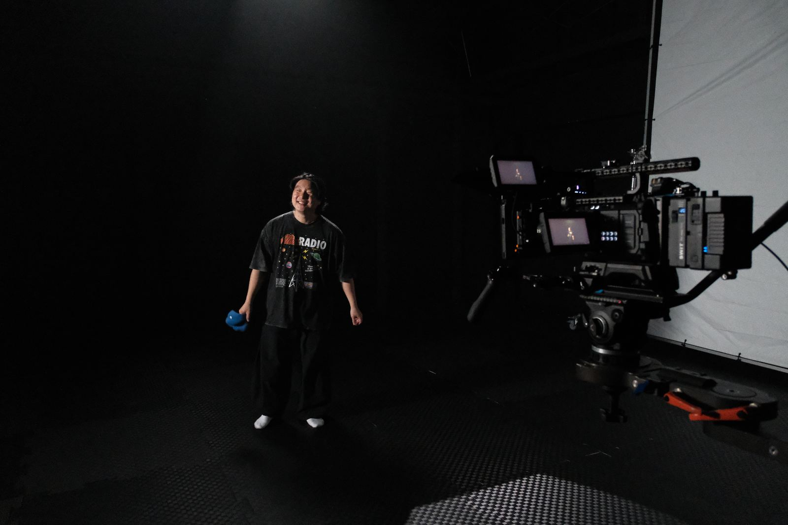
15:43:22조명 테스트. 감독이 남에게 시키지 않고 본인이 카메라 앞에 섰습니다
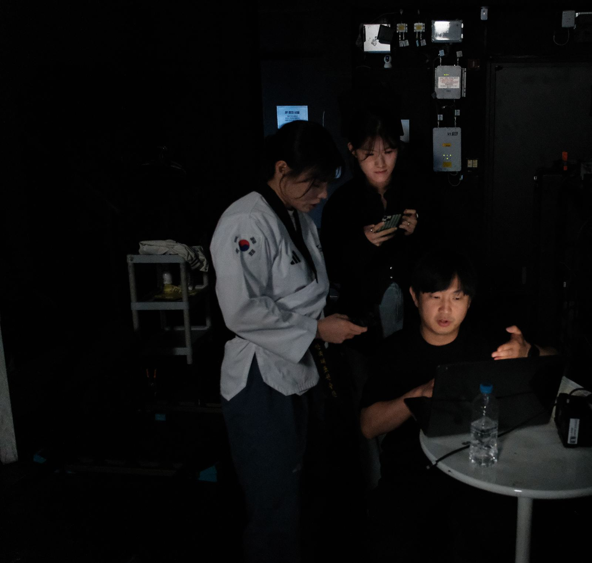
15:43:5230초 뒤. 대표는 모니터 앞에서 선수에게 화면을 짚어 가며 설명하고 있었습니다
나란히 선 사진 한 장보다,
이 두 장이 정확합니다.
STONEKIDS — 15:43:22 / 15:43:52
03 — 감독
말로 안 되면, 걸어가서 손으로 잡아 줬습니다
동작의 각도는 말로 설명하기 어렵습니다. “조금 더 위로”가 서로 다른 높이를 뜻하는 순간이 계속 생깁니다. 그럴 때마다 감독은 모니터에서 손을 떼고 선수에게 걸어가 팔을 직접 잡아 줬습니다.
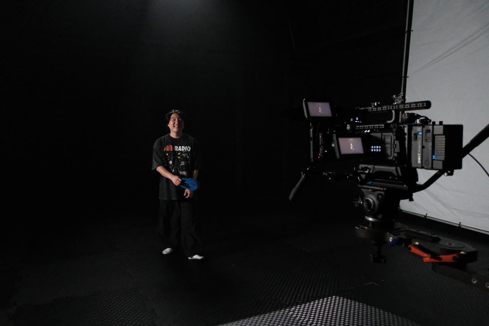
필요하면 본인이 대신 섭니다
04 — 대표
전부 보이는 자리에서, 기준에 맞는지만 봤습니다
대표는 촬영에 손을 대지 않았습니다. 대신 전체가 보이는 자리에 있었습니다. 위층 난간에서 세트를 내려다보고, 모니터 앞에서 방금 찍은 것이 기준에 맞는지만 봤습니다.
현장에서 판단이 늦어지는 이유는 대개 결정할 사람이 화면을 못 보고 있기 때문입니다. 그래서 결정하는 자리와 만드는 자리를 처음부터 나눠 뒀습니다.
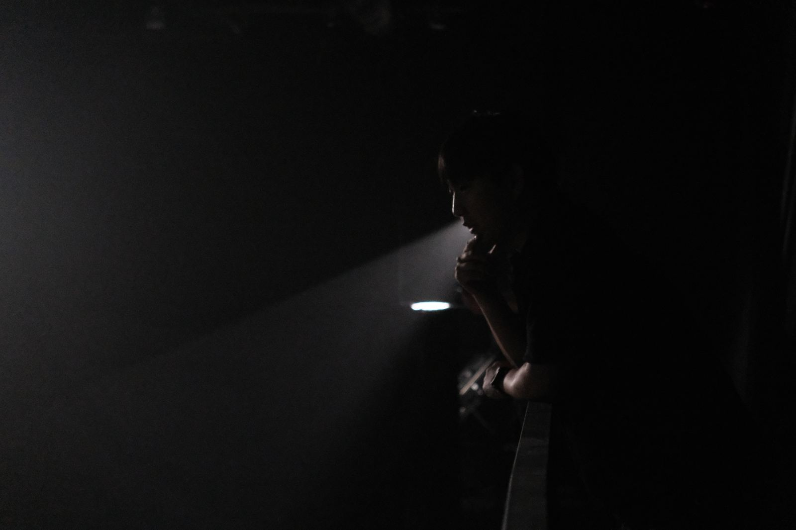
위층 난간 — 세트 전체와 빛의 모양이 한눈에 들어오는 자리
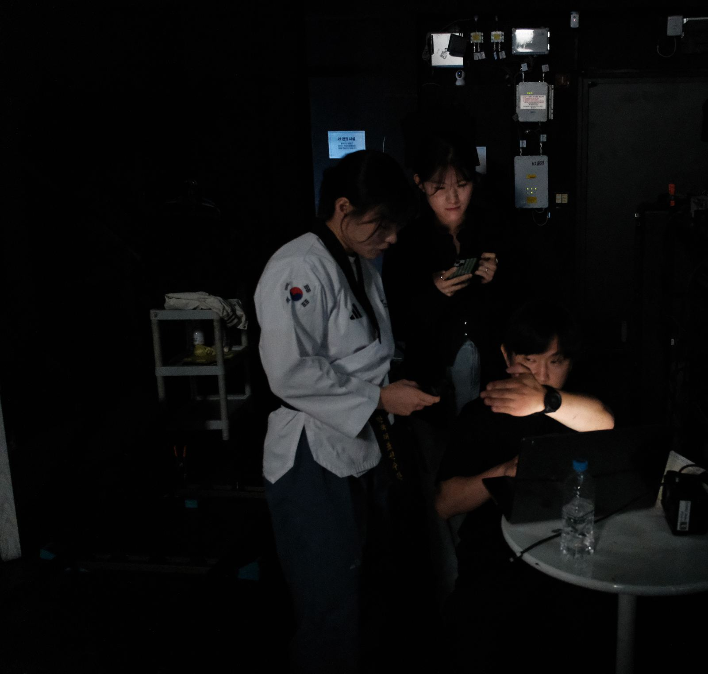
방금 찍은 컷을 선수와 함께 확인합니다
05 — 카메라
짐벌도 슬라이더도, 감독이 직접 잡았습니다
이 촬영의 움직임은 전부 손으로 만들었습니다. 선수의 동작을 따라가는 트래킹은 짐벌로, 정지한 동작을 훑는 이동은 슬라이더로. 장비를 세팅해 두고 맡기는 방식이 아니라, 컷마다 감독이 직접 잡고 갔습니다.
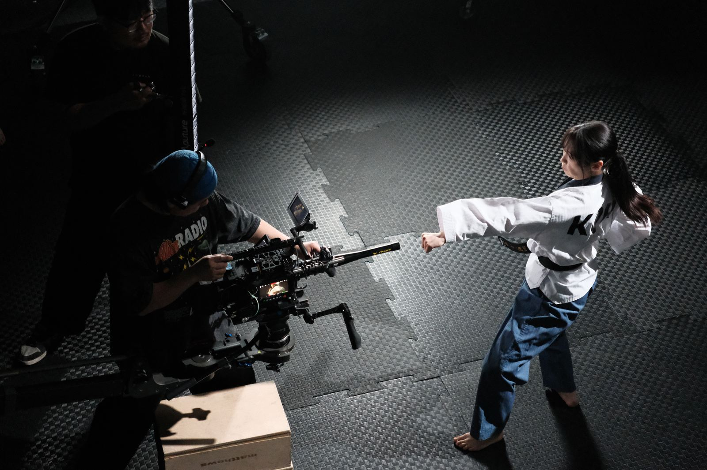
짐벌 트래킹 — 정권 지르기의 동세를 따라갑니다
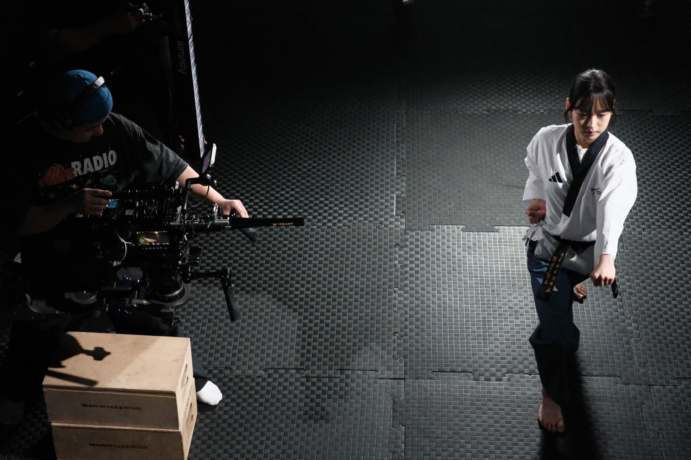
감독과 선수가 마주 본 채로 한 테이크씩
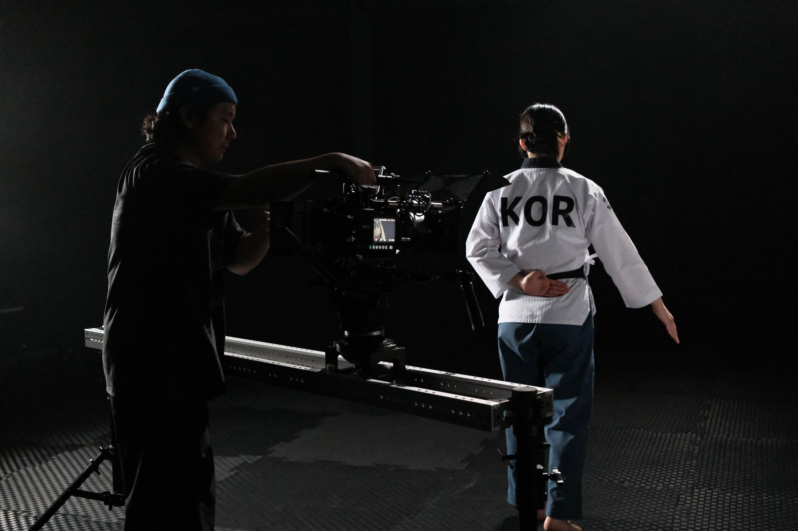
슬라이더 — 레일 위에서 천천히 훑는 이동
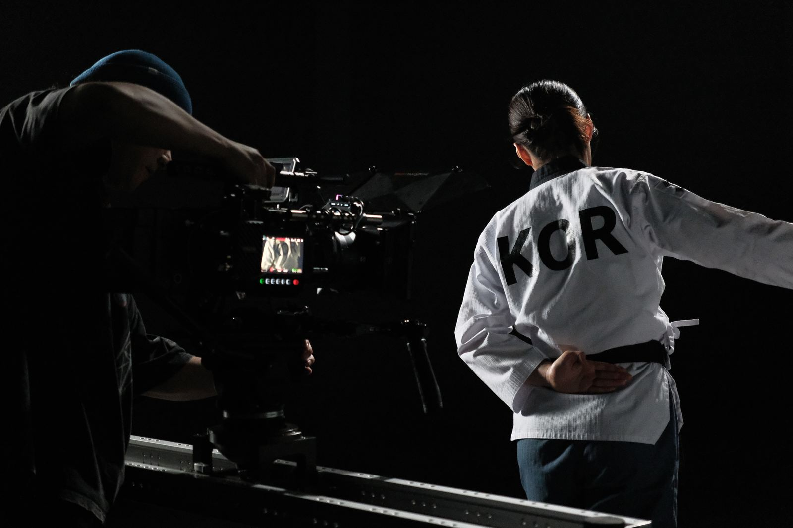
프레임 안에 KOR이 어떻게 걸리는지까지 봅니다
06 — 출연
1초를 위해 몇 번이고 다시 선 두 사람
화면에 남는 건 몇 초지만, 그 몇 초를 위해 같은 동작을 몇 번이고 다시 했습니다. 완성본에서 가장 짧게 지나가는 컷이 대개 현장에서 가장 오래 걸린 컷입니다.
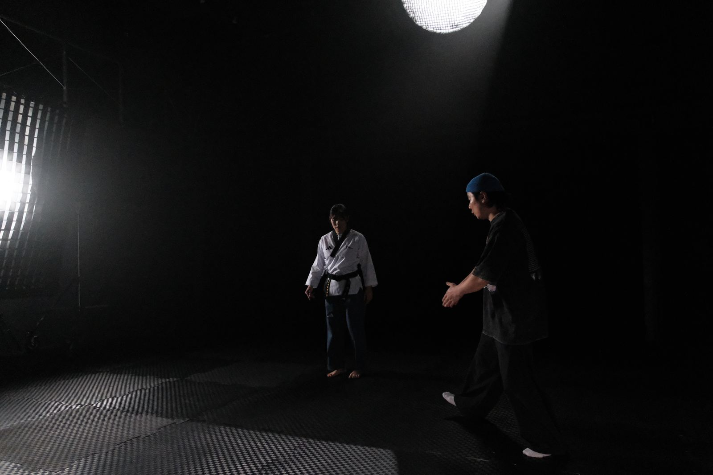
빛 아래 마주 선 두 사람
07 — 결과물
완성본
2026 춘천 세계태권도 품새선수권대회 대회 홍보영상 — 누르면 재생
CREDIT
제작 — 스톤키즈 / 촬영 — IDAWORKS